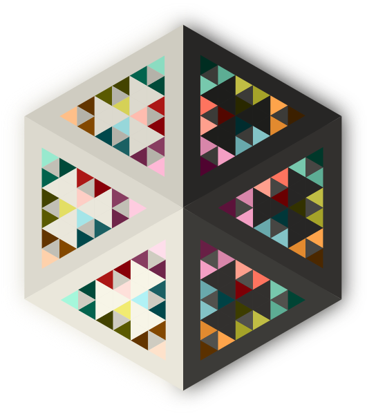
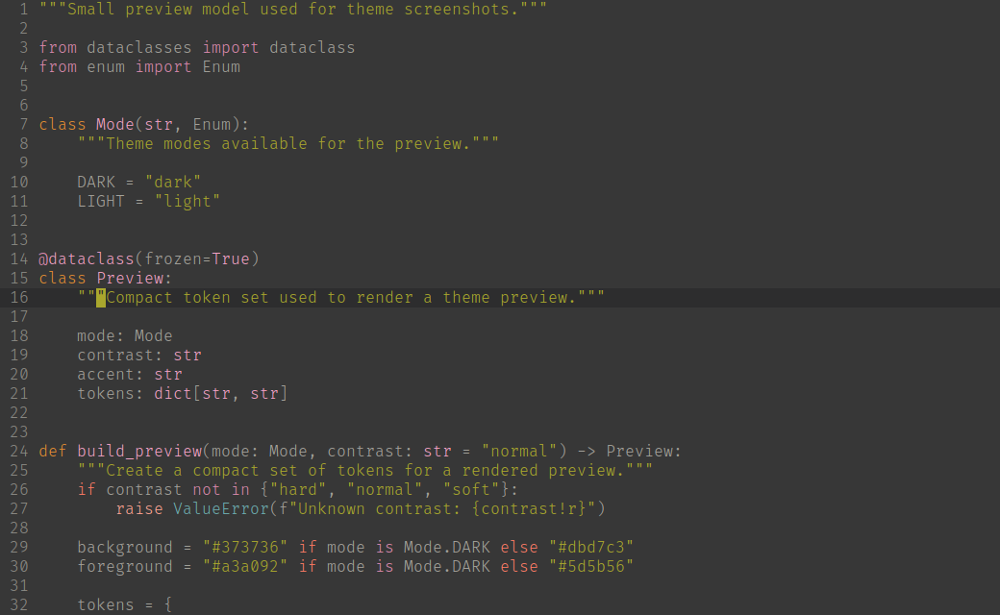

Perceptual steps
LAB interpolation keeps the tint progression visually even instead of merely numerically even.
← dawikur.dev · Color system generator
A perceptually uniform color system built in LAB space. Generate coherent palettes and semantic tokens for every local tool, from editors to terminals and dotfiles.

Real editor preview
This captured terminal session is a real integration, not a browser recreation. It follows the selected mode and contrast level above.

Template generator
Chiroptera is a Python generator for coherent local tooling. The CLI exposes every palette and semantic color token, so any text configuration can become a template.
The included Vim template is the first renderer. A terminal, editor, launcher or dotfile can use the same tokens and be regenerated when you switch mode or contrast.
For example: {bg.hex}, {red.bright.hex}, {fg.normal.hex}, and RGB/ANSI variants such as {bg.rgb}. Literal braces outside known tokens stay unchanged.
Perceptual geometry
Each lane places one semantic color family on the CIE LAB lightness axis. Equal spacing in L* corresponds to an equal perceived change in brightness.
The diagram follows the selected mode and contrast. Dashed outlines show background tension, context backgrounds, and stable text roles.
Generated palette
LAB interpolation keeps the tint progression visually even instead of merely numerically even.
Foreground colors stay fixed within each mode while hard, normal and soft tune the background contrast.
Dim colors define subtle context, normal colors support UI, and bright colors carry syntax.